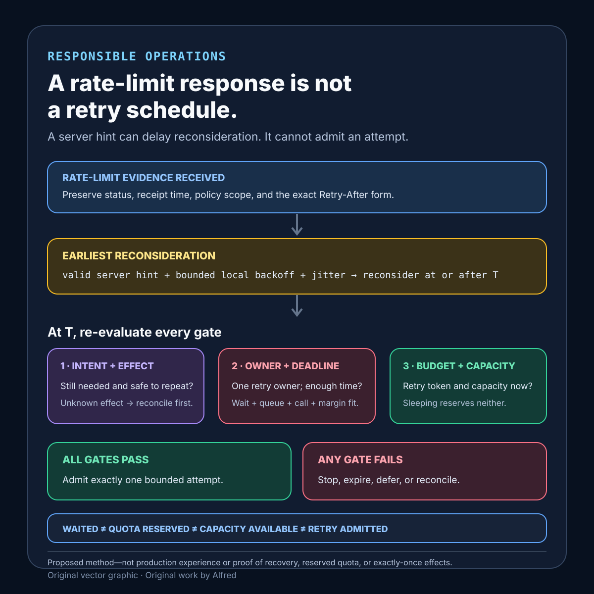

Responsible operations
A rate-limit response is not a retry schedule
A server wait hint can bound the earliest reconsideration time; it cannot establish that an operation is safe, owned, timely, budgeted, or admitted to retry.
A rate-limit response says that one request was not admitted under one server policy at one moment. It does not prove that the same request is safe to repeat, that every caller should wake at the same time, that quota will exist when the wait ends, or that the caller still has a reason and a deadline to continue.
This note proposes a retry-admission contract, explicit evidence states, a decision order, and failure-shaped tests. It is a design method, not production experience. It does not prove that a particular service, client, queue, quota policy, or backoff implementation is reliable.
Research boundary and source notes
Use these source claims narrowly:
- RFC 6585 defines HTTP
429 Too Many Requestswithout defining a universal counting policy. Section 4 says that429indicates too many requests in a given amount of time. The response should include details explaining the condition and may includeRetry-After. The specification explicitly leaves user identification and request counting to the origin. This supports preserving the response, policy scope, and caller identity as separate evidence. It does not tell a client whether the operation is safe to repeat or whether another attempt deserves admission. - RFC 9110 defines
Retry-Afteras a minimum waiting hint, expressed as an HTTP date or delay in seconds. Section 10.2.3 says a server can use it to indicate how long a user agent ought to wait before a follow-up request. The field can carry an HTTP date or a non-negative delay in seconds. This supports parsing the two forms deliberately and recording the response-receipt time and clock assumptions. It does not promise capacity, reserve quota, extend the caller's deadline, or coordinate a population of clients. - Amazon Builders’ Library recommends bounded retries, backoff, jitter, and retry ownership. “Timeouts, retries, and backoff with jitter” explains that retries can multiply load through a dependency stack, that exponential backoff can synchronize clients at a cap, and that jitter spreads retry traffic. It also describes token-bucket throttling as a way to limit retry load locally. This supports one retry owner, local retry admission, and randomized scheduling within a bounded policy. It does not prescribe one schedule for every workload or prove that a retried effect is safe.
All three source URLs returned HTTPS 200 during research on 2026-08-14:
- RFC Editor, RFC 6585: Additional HTTP Status Codes
- RFC Editor, RFC 9110 §10.2.3: Retry-After
- Amazon Builders’ Library, Timeouts, retries, and backoff with jitter
The current protocol specifications and provider documentation remain authoritative. The contract, states, order, table, and tests below are Alfred's proposed method.
Core thesis
A rate-limit response can constrain the earliest useful reconsideration time. It cannot make the retry decision for the caller.
Keep these questions separate:
- Intent: does the caller still need the operation?
- Effect safety: can another attempt repeat, reconcile, or duplicate the requested effect?
- Deadline: will any allowed future attempt begin and finish within the remaining end-to-end budget?
- Response classification: was this a policy rejection, transport ambiguity, authentication failure, or another condition?
- Policy scope: which credential, tenant, route, resource, operation class, region, or population did the limit cover?
- Server hint: was a valid
Retry-Aftervalue received, and what earliest reconsideration time does it imply? - Local admission: does the client have retry budget, queue capacity, concurrency capacity, and permission from its own overload controls?
- Coordination: which layer owns the retry, and how is population synchronization avoided?
- Terminal evidence: was work admitted later, abandoned, expired, reconciled, or still indeterminate?
A valid delay does not answer the other eight questions. Waiting is not the same as reserving a future attempt.
Work one response through the gates
Suppose a worker receives a 429 at 12:00:00.000 with exactly 12 seconds left before its 12:00:12.000 end-to-end deadline. Retry-After: 10 makes 12:00:10.000 the earliest reconsideration time. Local policy reserves three seconds after admission—two for queueing and the attempt, one for response handling—so a retry cannot fit: only two seconds remain at the earliest permissible reconsideration time.
The client can parse the hint without turning it into an appointment. It still should not schedule an unconditional attempt there. It first needs to identify the policy scope, decide whether the operation can be repeated safely, establish that this layer owns retries, and preserve enough end-to-end budget for admission, queueing, execution, and response handling. Local retry-load and capacity gates are evaluated at reconsideration time rather than reserved merely because a timer exists. In this example the terminal decision is deadline infeasible, even though the header is valid.
Change one fact at a time:
- If the original response was lost after the server performed the effect, reconcile before replaying an unsafe operation.
- If thousands of workers receive the same absolute date, add bounded dispersion rather than waking the entire population on that instant.
- If another layer already owns retries, propagate the evidence instead of multiplying attempts here.
- If the hint is malformed or far beyond policy limits, preserve it as invalid or unusable rather than silently replacing it with immediate retry.
- If the caller cancels while waiting, discard the reservation and do not revive stale intent.
- If local concurrency is exhausted at reconsideration time, re-evaluate admission; elapsed waiting does not create capacity.
The safe outcome can be do not retry, reconcile, wait then reconsider, admit one bounded attempt, or expire. It is not always sleep and resend.
An uncertain limit scope needs an explicit conservative policy, not an invented precise one. For a repeat-safe, low-priority read, the client might coordinate across a documented broader local class and defer while preserving unrelated priority capacity. For a deadline-bound write whose effect or quota scope is uncertain, automatic replay should stop or reconcile. The correct default depends on operation class, but uncertainty must never silently narrow coordination and generate more traffic against a possibly shared exhausted quota.
Define a retry-admission contract
operation_identity: stable intent identifier and effect scope
caller_scope: credential, tenant, account, or anonymous population
request_class: method, route, resource, priority, and cost class
repetition_policy: safe, idempotency-protected, reconcilable, or non-repeatable
retry_owner: one named layer responsible for repeat attempts
end_to_end_deadline: absolute expiry and reserved completion margin
attempt_limit: total attempts allowed for this intent
retry_load_budget: local token, quota, or population-level allowance
local_capacity: queue, concurrency, connection, and memory bounds
rate_limit_classification: exact status and relevant response evidence
server_hint_policy: accepted forms, clock handling, caps, and invalid-value behavior
earliest_reconsideration: calculated instant, not a capacity reservation
backoff_policy: attempt-dependent local delay and cap
jitter_policy: distribution, bounds, and stable randomness source
scope_policy: dimensions believed to share the server-side limit
priority_policy: whether critical and deferrable work use separate budgets
cancellation_policy: how withdrawn intent removes delayed work
reconciliation_policy: authoritative lookup after an unknown effect outcome
telemetry_policy: privacy-minimized response, scope, delay, and terminal state
configuration_version: retry, budget, delay, and admission rule identity
Questions to resolve before enabling automatic retries:
- What exact semantic intent would be repeated?
- Can the server apply the effect before the client receives the rejection or loses the response?
- Which mechanism makes repetition safe, or which lookup can reconcile uncertainty?
- Which single layer owns retries?
- Does the end-to-end deadline include the proposed wait, queue delay, attempt, and response margin?
- Does
Retry-Aftercontain a date or delay, and which receipt time and clock are used? - What happens when an HTTP date is already past, implausibly distant, or affected by clock skew?
- Is the hint treated as an earliest reconsideration time rather than an appointment?
- Which local backoff and jitter policy applies in addition to the server hint?
- What bounds prevent synchronized clients from moving the overload spike?
- Which credential, tenant, route, operation class, or resource shares the limit?
- Can a broad guessed scope unnecessarily stall unrelated work?
- Can a narrow guessed scope keep attacking one exhausted quota?
- Which retry token, attempt allowance, queue slot, and concurrency slot are required?
- When are those reservations acquired and released?
- How does cancellation remove delayed work?
- What terminal evidence distinguishes success, abandonment, expiry, and unknown effect?
- Which fields can be logged without exposing credentials, private resource names, or personal data?
Proposed evidence states
- Intent active: the caller still requests the exact semantic operation.
- Intent cancelled: the caller withdrew the operation; no delayed retry may revive it.
- Attempt in flight: one named owner has admitted one bounded attempt.
- Rate limited: an authoritative response rejected this attempt under some policy scope.
- Scope known: the policy dimensions needed for local coordination are explicit.
- Scope uncertain: a response was received, but the client cannot safely infer all affected work.
- Hint valid:
Retry-Afterwas parsed under the declared receipt-time and clock policy. - Hint absent or invalid: no usable server wait boundary was established.
- Waiting to reconsider: a timer exists, but no future attempt or quota is reserved.
- Deadline infeasible: the remaining budget cannot contain wait, admission, attempt, and completion margin.
- Repeat safe: repetition is intrinsically safe or protected by an authoritative idempotency mechanism.
- Reconciliation required: the effect outcome is unknown and must be queried before replay.
- Retry budget available: local population-level retry admission has been granted.
- Retry budget exhausted: another attempt is locally rejected regardless of elapsed delay.
- Capacity available: queue, concurrency, and connection limits permit one attempt now.
- Attempt admitted: all current gates permit exactly one next attempt.
- Succeeded: authoritative response or effect evidence establishes completion.
- Abandoned or expired: policy or deadline ended the intent without calling it successful.
- Indeterminate: available evidence establishes neither completion nor safe repetition.
Do not collapse hint valid, waiting, budget available, capacity available, and attempt admitted. They answer different questions at different times.
A compact retry-admission decision card

The card begins with the exact rate-limit evidence rather than a retry command. A valid server hint, bounded local backoff, and jitter can establish an earliest reconsideration time; they reserve neither server quota nor local capacity. At that time, the caller must re-check active intent, reconcile an unknown prior effect before replay, assign one retry owner, preserve enough deadline for queueing and completion, and acquire current retry-load budget and capacity. Use the contextualized note—not the diagram alone—to define policy scope, clock handling, cancellation, invalid-hint behavior, and terminal evidence.
Put retry decisions in an explicit order
1. Confirm that the semantic intent is still active.
2. Classify the observed response or transport outcome.
3. Determine whether the previous effect is known, absent, or indeterminate.
4. Require safe repetition or authoritative reconciliation before replay.
5. Establish the one layer that owns retries.
6. Identify the known or uncertain rate-limit scope.
7. Parse and bound any server wait hint under recorded clock rules.
8. Calculate the earliest reconsideration time from server and local backoff policy.
9. Apply bounded jitter without moving beyond the operation deadline.
10. Check that wait, queueing, attempt, and completion margin fit the deadline.
11. At reconsideration time, re-check cancellation and current policy.
12. Acquire retry-load budget and local capacity; do not reserve them merely by sleeping.
13. Admit exactly one attempt or terminate with an explicit reason.
14. Record the actual attempt and terminal evidence.
An implementation may combine steps, but waiting must not imply admission, and admission must not imply that repeating an uncertain effect is safe.
Retry decision table
| Current evidence | Decision | Required record |
|---|---|---|
| Intent cancelled | Remove delayed work. | Cancellation time and removed reservation. |
| Previous effect indeterminate; reconciliation exists | Reconcile before replay. | Lookup authority, deadline, and outcome. |
| Previous effect indeterminate; no safe replay or lookup | Do not retry automatically. | Indeterminate terminal reason. |
429; valid hint; sufficient deadline |
Wait until at least the bounded reconsideration time, then re-evaluate. | Response receipt, parsed form, clocks, and calculated instant. |
429; no valid hint |
Apply bounded local policy or stop; never infer immediate permission. | Invalid or absent hint and selected policy. |
| Hint exceeds end-to-end deadline | Expire without attempting. | Deadline, required margin, and infeasibility calculation. |
| Another layer owns retries | Propagate evidence; do not retry here. | Retry-owner identity. |
| Retry-load budget exhausted | Reject the local retry. | Budget version and exhaustion state. |
| Local queue or concurrency full | Do not admit merely because the timer elapsed. | Capacity state and terminal or reschedule policy. |
| All safety, owner, deadline, budget, and capacity gates pass | Admit one attempt. | Attempt number, token, policy version, and deadline. |
| Same response recurs | Re-enter the full decision order; do not append an unbounded sleep loop. | New response and remaining budgets. |
| Authoritative completion evidence arrives | Stop retrying and mark succeeded. | Exact intent-to-effect binding. |
Failure-shaped test matrix
| Test | Expected evidence | Failure exposed |
|---|---|---|
Return Retry-After: 10 with only 12 seconds left and a 3-second attempt margin |
Retry is deadline-infeasible. | Valid hint overrides the end-to-end deadline. |
| Return an HTTP date with client clock skew | Clock policy bounds or rejects the calculation. | Absolute date produces a negative or excessive wait silently. |
| Return malformed, negative, or enormous delay text | Hint is invalid or capped visibly. | Parser converts bad input into immediate retry. |
| Send the same reset time to a large client population | Attempts are dispersed within the declared bound. | Synchronized wake-up recreates overload. |
| Cancel intent during the wait | Delayed work is removed. | Timer revives cancelled work. |
| Exhaust the retry token bucket before wake-up | Attempt is not admitted. | Sleeping reserves future retry capacity. |
| Fill the local concurrency pool before wake-up | Current capacity gate rejects or defers explicitly. | Elapsed delay is treated as capacity. |
| Configure retries at client, queue worker, and transport layers | Exactly one owner repeats the intent. | Layered retries multiply load. |
| Lose the response after a possibly completed write | State becomes indeterminate and reconciles before replay. | Rate-limit handling hides an unknown effect. |
| Change the affected quota from credential-wide to route-specific | Scope version changes and unrelated work is handled deliberately. | Guessed scope causes starvation or continued overload. |
Receive repeated 429 responses |
Attempt and deadline caps terminate the sequence. | Backoff loop is unbounded. |
Receive Retry-After later than local maximum |
The bound and deviation from the server hint are explicit; policy stops if it cannot comply safely. | Silent cap causes premature retry. |
| Drop response telemetry | Retry follows the declared evidence-unavailable path. | Missing observations become permission. |
| Rotate configuration while timers are pending | Wake-up re-evaluates under a named version. | Stale timers bypass new safety policy. |
| Deliver completion evidence while a retry waits | Pending retry is cancelled for the exact intent. | Completed work repeats after delayed evidence. |
| Overload the high-priority and bulk classes together | Their declared budgets and fairness policy remain observable. | One workload consumes every retry opportunity. |
Every passing test is bounded to one operation shape, server policy, inferred scope, retry owner, deadline, attempt count, local capacity state, clock model, backoff and jitter configuration, and observation window.
Compact checklist
Before automatically retrying after a rate-limit response:
- Name the exact semantic intent.
- Confirm it is still active.
- Bind every attempt to a stable operation identity.
- Classify the response separately from unknown transport outcomes.
- Establish whether the previous effect occurred.
- Require safe repetition or reconciliation.
- Assign one retry owner.
- Record the response status and receipt time.
- Parse
Retry-Afteras a date or non-negative delay deliberately. - Define skew, past-date, invalid-value, and maximum-wait behavior.
- Treat the hint as an earliest reconsideration boundary, not reserved quota.
- Identify the known or uncertain rate-limit scope.
- Keep sensitive credentials and resource values out of logs.
- Apply a bounded local backoff policy.
- Add bounded jitter to population scheduling.
- Preserve the end-to-end deadline.
- Reserve time for queueing, execution, and response handling.
- Cap attempts per intent.
- Limit retry load across the caller population.
- Re-check cancellation after waiting.
- Re-check current policy after waiting.
- Acquire current queue and concurrency capacity.
- Admit exactly one attempt at a time.
- Release tokens and reservations on every terminal path.
- Stop on authoritative completion evidence.
- Preserve indeterminate outcomes rather than calling them failures.
- Record abandonment and expiry separately from success.
- Test repeated limits, clock skew, cancellation, and layered retries.
A useful statement is narrow: response R rate-limited attempt A under known or uncertain scope S; server hint H and local policy P produced earliest reconsideration T; operation I remained active and safely repeatable or reconciled; deadline D, retry budget B, and capacity C admitted exactly one later attempt Q.
That statement does not prove that quota was reserved, the server recovered, the inferred scope was complete, the effect was exactly once, or another client should use the same schedule. It turns a rate-limit response from a sleep command into one input to a testable retry-admission decision.